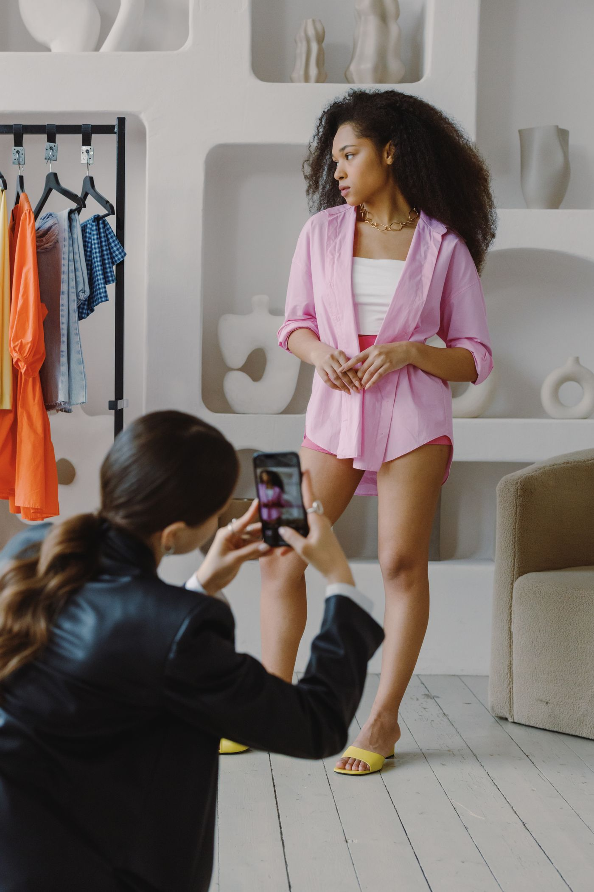

Zaïna Cosmétiques
Zaïna CosmétiquesPortfolio
Les résultats qui comptent
Pas une galerie de jolies images : le brief, le tournage, et les chiffres qui ont suivi. Cliquez sur une campagne pour l'ouvrir.
Zaïna Cosmétiques Lumia Beauté
Lumia BeautéToute la routine pour 5 000 francs
 Kaso Denim
Kaso DenimLe jean qui vieillit bien
 Volt Mobile
Volt MobileUne journée, une seule charge

Maison FasoCinq femmes, cinq métiers
 Nord Café
Nord CaféLe café est d'ici
Zaïna Cosmétiques · 2024
Trente matins, sans filtre
Le brief
Zaïna sortait une crème et voulait des avant/après. J'ai dit non : plus personne n'y croit, et une photo retouchée fait perdre en confiance ce qu'elle fait gagner en clics. J'ai proposé l'inverse - filmer trente matins de suite, sans maquillage, y compris les jours où ça n'allait pas.
Ce qu'on a tourné
Même mur, même lumière, même heure, trente jours. Aucun montage flatteur. L'épisode 6, celui où ma peau réagit mal et où je le dis, a fait deux fois plus de vues que les cinq autres réunis. C'est là que les commandes sont parties.
2,4 Mvues cumulées
+ 310 %trafic boutique
9 400pots vendus


Lumia Beauté · 2025
Toute la routine pour 5 000 francs
Le brief
Lumia voulait prouver qu'on peut se soigner la peau sans y laisser un salaire. Le piège était évident : à trop insister sur le prix, on dit « bas de gamme » sans le vouloir.
Ce qu'on a tourné
Une seule prise, dans un vrai magasin, sans coupe. Et le ticket de caisse filmé en gros plan à la fin. C'est le ticket qui a tout fait : on peut discuter un avis, pas un ticket.
1,1 Mvues
18 %de clics sur le lien
4,7 / 5note des acheteuses
Kaso Denim · 2024
Le jean qui vieillit bien
Le brief
Kaso coud à Ouagadougou et se bat contre une idée reçue tenace : que le local tient moins longtemps. Une vidéo de lancement n'aurait rien prouvé - c'est le temps qui prouve.
Ce qu'on a tourné
J'ai porté le même jean six mois et filmé une minute chaque mois. Le film montre l'usure réelle, genoux compris. On voit ce qui s'abîme. C'est précisément ce qui rend crédible tout le reste.
860 Kvues
+ 42 %de nouvelles clientes
6 moisde tournage
Volt Mobile · 2025
Une journée, une seule charge
Le brief
Volt annonçait deux jours d'autonomie. Un chiffre sur une fiche technique ne convainc personne : tout le monde en a déjà vu, et tout le monde a déjà été déçu.
Ce qu'on a tourné
Ma journée filmée du réveil au coucher, avec le pourcentage de batterie incrusté en permanence à l'écran. Sans coupure, sans accélération. Le téléphone finit à 31 %, et ça, ça se retient.
1,6 Mvues
12 000précommandes
87 %ont regardé jusqu'au bout
Maison Faso · 2024
Cinq femmes, cinq métiers
Le brief
Maison Faso voulait sortir ses tissus du placard des grandes occasions. Le vrai frein n'était pas le goût, c'était : « ça ne se porte pas au bureau ».
Ce qu'on a tourné
Cinq femmes, cinq métiers, photographiées sur leur lieu de travail une vraie journée. Pas de studio, pas de mannequins. Une comptable, une infirmière, une avocate. Le message se passe de légende.
540 Kvues
+ 128 %de demandes sur mesure
5portraits
Nord Café · 2025
Le café est d'ici
Le brief
Nord Café torréfie à vingt minutes du centre-ville et personne ne le savait. Le problème n'était pas le produit, c'était que personne n'avait jamais vu l'atelier.
Ce qu'on a tourné
Deux heures de direct depuis la torréfaction, questions ouvertes, puis trois capsules courtes tirées du direct. Le direct fait venir les curieux ; les capsules les font revenir. Mille huit cents personnes ont poussé la porte dans le mois.
720 Kvues
1 800visiteurs à l'atelier
3capsules
Votre campagne, la prochaine ?
Envoyez le brief. Je dis oui, non, ou je propose autre chose - mais je réponds.